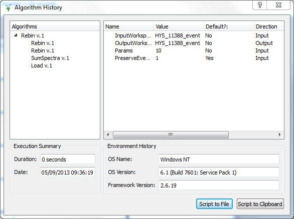

Algorithim Histories¶
Algorithm History¶
Mantid keeps the entire history of all algorithms applied to workspaces. Not only does this allow you to audit the data reduction and analysis, it also provides the means to extract a re-executable python script from the GUI.
Right click on HYS_11388_event and select ‘Show History’. This will open up the Algorithm History window. In the left-hand side Algorithms panel click on the arrow in front of Rebin v.1 and should see the following:

This reveals the history done to this workspace, i.e. Load to load the workspace, SumSpectra, and three Rebins. To replay the history do:
From the main MantidPlot menu Select View->Script Window, this opens the ‘MantidPlot: Python Window’
Go back to Algorithm History window and press the ‘Script to Clipboard’ button and close the Algorithm History window
Flip to the script window (‘MantidPlot: Python Window’) and paste what was copied to the clipboard into the script window
Close the HYS_11388_event-1 plot window
Delete the HYS_11388_event workspace from the Algorithms panel
To recreate the work you have just done script window execute the script via Execute->Execute All on the script window.
To verify that history has been replayed either look at history or plot spectrum again